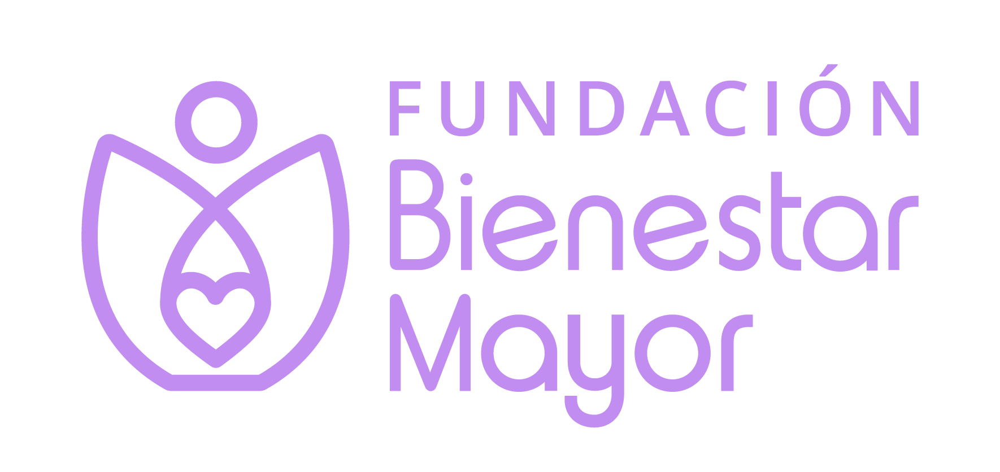

Confirmar datos

Ingresa la clave del evento para poder escanear carnets.
Crea uno nuevo o continúa uno que ya está en curso.
Usa el nombre y fecha de arriba. Debe tener una columna "Rut" — el resto de las columnas (nombre, correo, comuna, etc.) se detectan solas, en cualquier orden. Subir un archivo nuevo reemplaza la lista anterior de ese evento.
Encuadra solo el QR del carnet dentro del recuadro, con buena luz y sin reflejos.
Si el escaneo en vivo no detecta el QR, usa este botón: toma una foto fija en alta resolución y la analiza con más calma — funciona mejor con códigos densos como el de la cédula.